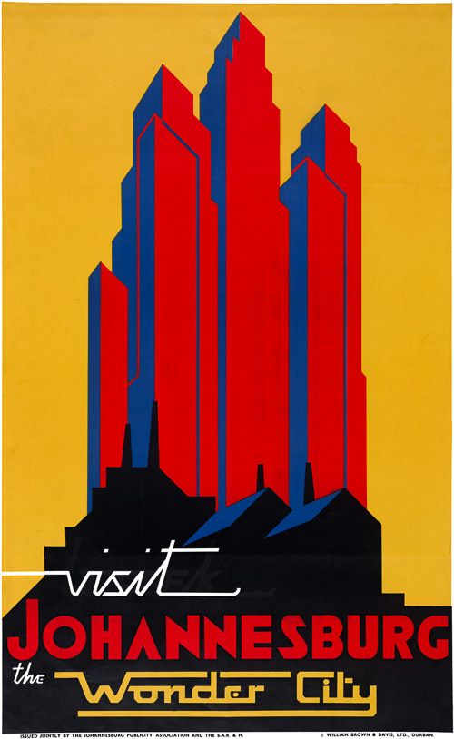
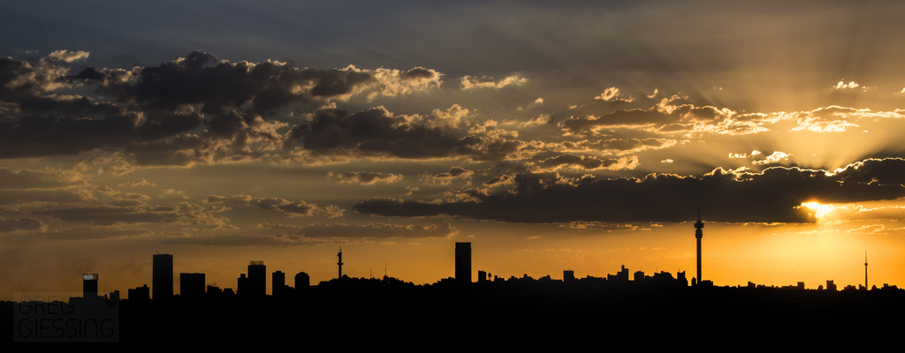

Buzz Blog
A block mounted version of the featured image of this blog, a vintage travel poster circa 1935, hangs on a wall in my house. I was raised, schooled and went to University in Cape Town, but I would choose Johannesburg, South Africa, as my home again and again.
Many people feed the rivalry between Cape Town and Joburg. For me, it is not a competition. I admit, sure, Cape Town has the winning hand when it comes to natural beauty, winelands and the sea side. I have never disputed it. In fact, I love it. I am lucky enough to have my family in Cape Town, so I get to go home and enjoy all that makes it unique and beautiful several times a year. But I am always buzzing to jump back on a flight to Jozi and as soon as I’m back on to the streets of the City of Gold, I know that I belong here. The energy gets in my bones and I know that I am home.
In my opinion: a lot of, largely, Cape Townians, especially those who have rarely or never ventured to Jozi and certainly never lived here, are shocked at my above confession, rattling off Table Mountain, Camps Bay and Kirstenbosch as unbiased proof for Cape Town’s superiority to the dark, ugly north. (I used to be one of them.) It is usually Joburgers who just smirk and know there is a magic to this place, never having to “knock” Cape Town – it IS amazing – with the quiet confidence that Johannesburg gives us.

I have traveled widely. I have traveled through many towns. Locally and abroad. I have visited many cities, big and small. From New York to Bangkok, Budapest to Berlin, Paris to Belfast and many more. As an adult, I have lived, for substantial periods, in Cape Town, Johannesburg and London. I have a strong, active network in each of these cities. Of course, I am biased, but I list some of my experience to back up my opinion: that Johannesburg is the friendliest city I have ever been to.
For me, living in Jozi, feels like I am living in one enormous town. It is a seriously precious thing. Everywhere I go, people make, at the very least: eye contact, they often smile and are very likely to greet. Anyone. To everyone! There is no other city that does quite this. In Jozi, people are generally not too bound to cliques. I literally and honestly make half a dozen, new, good friends every year. It is an huge city that functions like a town. A place with a wonderful, optimistic spirit. Beautiful energy for children to be exposed to.
Many people make the mistake to hold on to out dated notions that Johannesburg has a higher crime rate than Cape Town. But a simple look at Crime Stats SA will prove that Jozi is the safer place. Gauteng is not a contender in the “Contact crimes” category. Crime is horrible. I’m not disputing that. (That’s a whole other blog.) But crime is a South African condition, not a Johannesburg one. This was actually the reason why Condé Nast Traveller deemed Johannesburg “unfriendly.” It was based on (then) crime statistics (and opinion.) Now their website boasts writings like this one, enticing visitors to this vibrant, cool city.
Another huge rabbit hole that I should potentially have steered clear of is: integration. South Africa is multi- EVERYTHING. Many cultures, ethnicities, languages, religions, etc. As shockingly far as the bourgeoisie is from representing THE TRUE South Africa, in Gauteng, the upper & middle classes are more mixed and starting to edge closer to a truer representation of us.
I like to use this example: If I walk around Cresta, Rosebank or Sandton Mall on a mid week, mid afternoon, there is inevitably a selection of black, white, indian (and other!) moms debating home work with their over tired trolley bound children in the crowded queue at Woolies. They might not be proportionally represented but they have become “stock characters” in the background of my daily routine. I notice immediately if I miss this full mix in other cities.
In restaurants, although most waiting staff are unfortunately predominantly black across the country, in Johannesburg, the clientele feels better mixed. Yeah, the proportions are still out of balance, and yes, we have a long way to go, but the middle class just feels more integrated. A better (not perfect) representation of South Africa. It gives me hope. This integrated city sets a much better example to children, in my opinion.
I run the company of which I am the founder and I owe so much of what we have achieved to Jozi’s spirit of networking and connectedness. There is a hustle and bustle in this city. There is a pace to this place. There is a vibe that a young entrepreneur, like myself, needs. It is the wave that carries the dreamers, the seekers and the brave and connects us to helping hands and ideas. I believe it is the same pulse that carried people to this mining capital when it first became. It still has the buzz of opportunity and life force.
As the world is changing rapidly, and we don’t know how to best equip and educate children for the world to come, I believe (and have written) that children will create and forge futures we can’t even imagine. I believe Joburg is the place to be. Entrepreneurship is contagious.
This may be a preference point but I think Johannesburg is breathtakingly beautiful. Sunset never fails to surprise me: the horizon often ablaze with bold and dramatic colour. There is very little wind and mostly crisp blue skies, which make mornings really pop in Gauteng. It gives the day a sense of optimism and hope.
It is the world’s largest man made forest. This site states that there are 6 million trees in Joburg. Most suburban car journeys (yeah, the highways are dreary) include zipping through a leafy, green, thick tunnel in a tree lined street, with shadows casting beautiful patterns on the road. A trip up to any high vantage point reveals a sea of green.
Gauteng is more sunny than the Western Cape more often. If you are like me, sunshine lifts your spirit. I have lived in the UK, the lack of sun is certainly devastating to mood and well-being. Johannesburg is a top performer in the stats:
(The above from Johannesburg.climatemps.com)
Why great for kidz? Well, you know what they say about putting things in the sunshine to grow:)
There are a few schools in Johannesburg that are world renowned and some parents are lucky to afford their children these opportunities.
Most revolutionary activities which really benefit children, physically, cognitively or otherwise will launch, trial or establish in Johannesburg first. There is a culture of willingness, risk and access to disposable income that makes it a fertile testing ground. A benefit to its youngest inhabitants.
South African problems like crime or issues like integration are country wide. So are natural wonder, opportunities, good people and good ideas. This is my praise song to Johannesburg but I believe that and no matter WHERE one finds oneself, you can make your own magic.